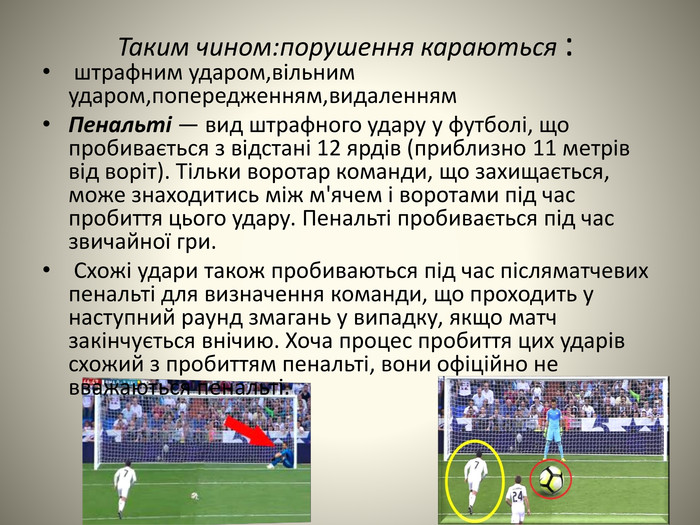

Що не можна робити у футболі?
Удар або спроба вдарити суперника ногою;
Підніжка або
спроба зробити суперникові підніжку;
Стрибок на суперника;
Атака суперника;
Удар або спроба вдарити суперника рукою;
Поштовх суперника.
Футбол
Це командний вид спорту, в який грають дві команди по одинадцять гравців зі сферичним м'ячем. Близько 250 мільйонів чоловіків і жінок із більш ніж 200 країн грають у футбол, що робить його найпопулярнішим у світі видом спорту. Футбол — олімпійський вид спорту.
Головні правила фудболу
Грають на футбольному полі завдовжки 90—120 метрів і завширшки 45—90 метрів. На двох протилежних кінцях стоять ворота (завширшки 7,32 м і заввишки 2,44 м), куди потрібно завести м'яча. М'яч, обвід якого повинен бути 68-71 см, а маса — від 396 до 453 грамів. У момент початку гри тиск усередині кулі має бути від 0,6 до 1,1 атмосфери (600—1100 г/см²).